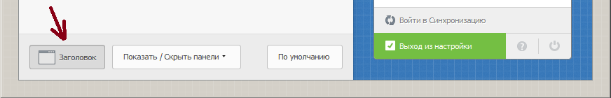
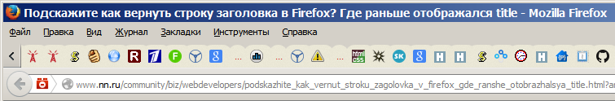

В новых версиях FireFox, начиная примерно с 29-й версии, перестал отображаться заголовок страницы. Теперь в заголовке страницы располагается меню.
Вопрос: Подскажите как вернуть строку заголовка в Firefox? Где раньше отображался title. Очень без нее неуютно..
Ответ: Нужно кликнуть правой кнопкой мыши вверху на строке вкладок (на пустом месте) и нажать "Настроить" или в более новых версиях "Изменить". Открывается окно настроек. Внизу есть зеленая кнопка "заголовок":

Нажимаем кнопку "Заголовок", потом нажимает "Выход из настройки", и оформление окна вернется к нормальному стандартному виду:

Еще один вариант - это вернуть заголовок через дополнение. Дополнение Сlassicthemerestorer поможет вернуть заголовок, настроить вид вкладок и т. д.:
https://addons.mozilla.org/en-US/firefox/addon/classicthemerestorer/